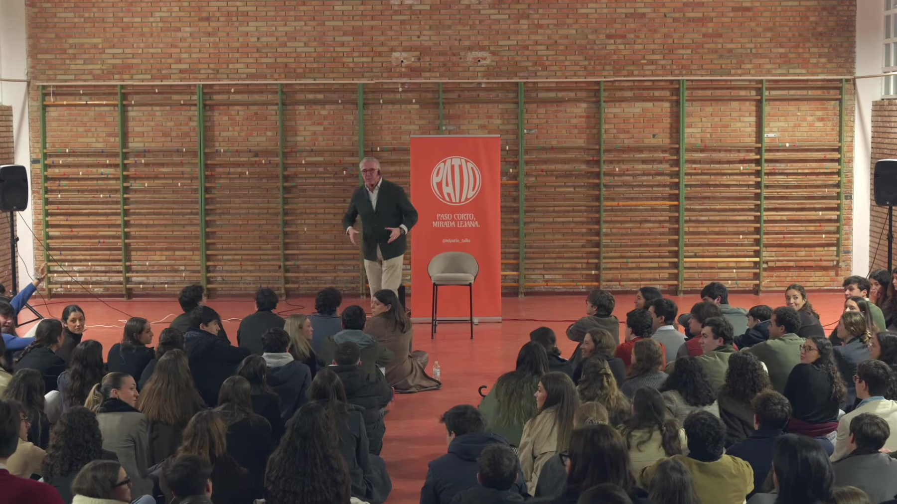
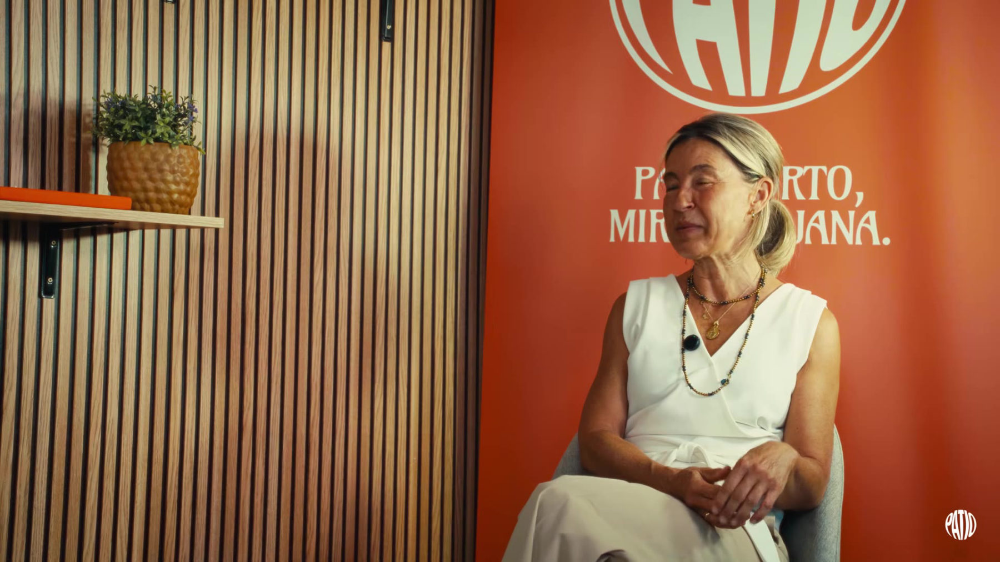

Delante de ti
Los patios presenciales: una historia, un público que pregunta sin miedo y después el afterpatio, con música, comida y conversación.
Cada mes, en Córdoba.
Charlas presenciales en Córdoba y un podcast cada dos semanas. Elige una pregunta.

Los patios presenciales: una historia, un público que pregunta sin miedo y después el afterpatio, con música, comida y conversación.
Cada mes, en Córdoba.

El podcast: una conversación sin prisa sobre amistad, liderazgo, educación, superación, emprendimiento y testimonios de vida.
Cada dos jueves, en YouTube y Spotify.